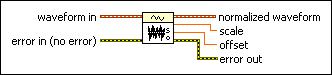

Normalize Waveform VI
Owning Palette: Analog Waveform VIs and Functions
Requires: Base Development System
Determines the scale and offset necessary to transform the waveform data so that its maximum is 1.00 and its minimum is -1.00.

 Add to the block diagram Add to the block diagram |
 Find on the palette Find on the palette |